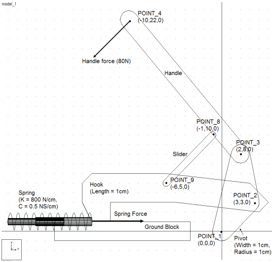
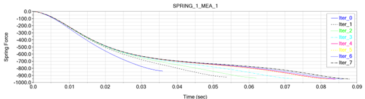

Optimization with Adams View
Completed multiple design studies in order to minimize the input force required to close a latch. My biggest takeaway from this introductory project was the ability to quickly learn and apply engineering principles to new software programs.

Initial latch model setup in Adams View

Force optimization results after design studies
Goals
- Develop a multibody simulation of a latch mechanism
- Perform parameter sweeps and design studies
- Minimize input force through mechanical optimization
Tools & Skills Used
Adams View
Design Optimization
Computational Algorithms
 Engineering Report
Engineering Report